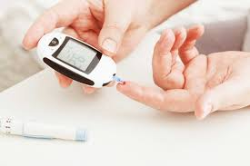

medical store
featured categories
OTC Image
Over-the-counter medicine is also known as OTC or nonprescription medicine. All these terms refer to medicine that you can buy without a prescription. They are safe and effective when you follow the directions on the label and as directed by your health care professional.
Read MoreDiabities
Diabetes mellitus (DM), commonly referred to as diabetes, is a group of metabolic disorders in which there are high blood sugar levels over a prolonged period. Symptoms of high blood sugar include frequent urination, increased thirst, and increased hunger. If left untreated, diabetes can cause many complications.
Read MoreBaby Mother
A baby mama (also baby-mama and baby-mother) is a mother who is not married to her child's father, although the term is often infused with other meanings as well.A mother is the female parent of a child. Mothers are women who inhabit or perform the role of bearing some relation to their children, Such conditions provide a way of delineating the concept of motherhood
Read MorePersonal Care
Personal care items are toiletry items. These are products used by people to look after their bodies, and to improve their appearance. They are usually sold in chemist shops and supermarkets. Many celebrities use beauty products.Personal care includes products as diverse as cleansing pads, bandages, colognes
Read Morefeatured article
1.

Ayurveda is a system of medicine with historical roots in the Indian subcontinent. Globalized and modernized practices derived from Ayurveda traditions type of complementary or alternative medicine. In countries beyond India ayurvedasome cases in medical..
Read More2
Ayurveda is a system of medicine with historical roots in the Indian subcontinent. Globalized and modernized practices derived from Ayurveda traditions are a type of complementary or alternative medicine.
Read More3
Clinical trials on Ayurvedic drugs are clinical trials carried out on Ayurvedic medicine. Preliminary research has been conducted into the use of ayurvedic remedies for treating rheumatoid arthritis.The U.S. National Institutes of Health states that "Most clinical trials of Ayurvedic
Read More4
Ayurvedic medicine is a system of alternative medicine that descends from ancient medical techniques of Hindu society in Ancient India. There are three principal early texts on Ayurveda, the Charaka Samhita, the Sushruta Samhita and the Bhela Samhita.
Read More